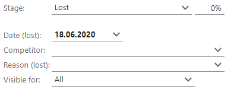

Stalled, sold and lost sales
In the Stage field in the Sale screen, you can set the sale to Sold or Lost. You can also check the Stalled checkbox below this field if you want put the sales process on hold. If you do this, the fields underneath change, along with the icon at the top left of the Sale screen.
For individual sale types, a list of stages, as defined in SuperOffice Settings and maintenance, is also displayed. To find out more about these, see the Sales guide.
| Icon | Meaning |
|---|---|
| Open | |
| Stalled | |
| Lost | |
| Sold |
Open

Stalled
If you set the sales to Stalled, the following fields are displayed:
- Re-open date: Here you can enter the date when the sale should be reopened.
- Reason (stalled): Here you can enter the reason for the delay.

In addition, the Appointment dialog opens when you click Save. Here you can set up a future meeting or phone call to follow up the stalled sale.
Sold/Lost
If you set the sale to Sold or Lost, you can enter the date, any competitor and the reason why the sale succeeded or failed.
Sold:

Lost:
